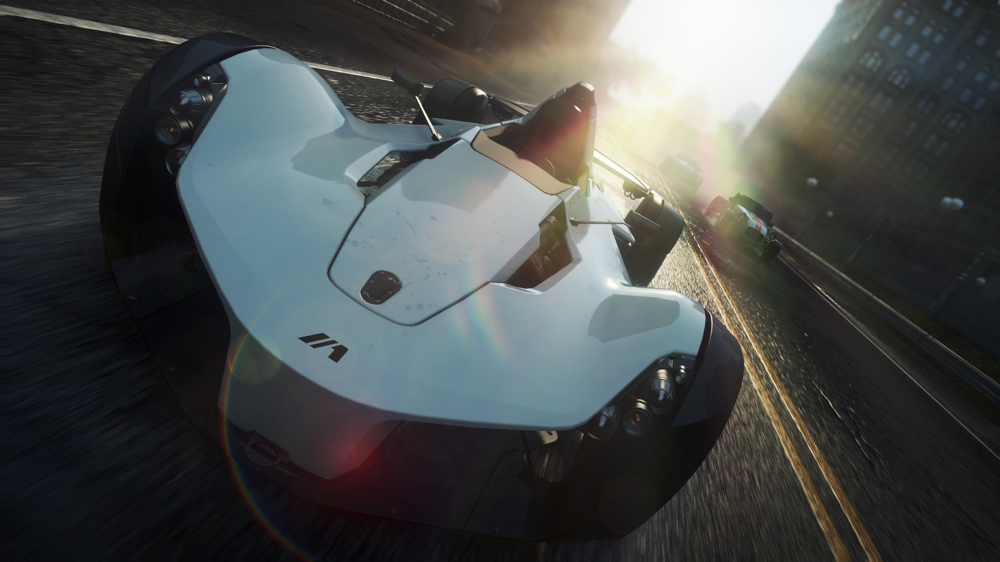

This Page Contains exclusive cool info!
Need for Speed: Most Wanted takes on the gameplay style of the first Most Wanted title in the Need for Speed franchise. Most Wanted allows players to select one car and compete against other racers in three types of events: Sprint races, which involves traveling from one point of the city to another, Circuit races, each having two or three laps total and Speed runs, which involve traversing through a course in the highest average speed possible. There is also the Ambush races, which start with the player surrounded by cops and tasked to evade their pursuit as quickly as possible.
Cops are integrated into certain racing sessions, in which the police deploy vehicles and tactics to stop the player's car and arrest the player, like the original Most Wanted. The game features a Blacklist (also known as The Most Wanted List) of 10 racers, similar to the single-player section of the original Most Wanted, which featured 15 Blacklist racers. As the Most Wanted racers are defeated, their cars are added to the player's roster. In this reiteration, the focus shifts from Rockport, the city in the original, to a new city called Fairhaven.
Most Wanted has been likened to the Burnout series. Like Burnout Paradise, races have a start and end point but players can choose their own route to the finish line, a departure from the original Most Wanted, but similar to "crew challenges" from the sequel, Carbon. Destructible billboards and fences; and drive-through repair garages, all of which originated from Paradise, are also featured.
The game uses Autolog, the competition-between-friends system developed by Criterion for Need for Speed: Hot Pursuit, and since used in other titles in the Need for Speed series. Autolog in Most Wanted plays a larger role and gives more information to players. Activities in-game allow players to earn Speed Points which can boost players up on the Most Wanted list. Autolog recommendations have now been integrated into the game world, rather than sit externally on the menu system. Most Wanted features a new social system called Cloudcompete, which strings together Most Wanted across all platforms in an inspired example of cross-compatibility. One profile is used for all versions of the game, allowing the player to rank up on one format and continue progress on another.
The driving model of the game has been described as "deep, physical and fun", not as arcade-styled as the Burnout series and Hot Pursuit, but far from a simulator. Most Wanted has a range of real-world vehicles, a mix of muscle cars, street racers and exotics, described as "the wildest selection of cars yet". The cars can be altered with performance upgrades, such as reinflatable tyres, transmission, engine, nitrous oxide, and body work that enables players to crash through roadblocks, have a higher top speed, and accelerate faster. A feature called EasyDrive enables players to customise their vehicles while in action. Almost all the cars are available from the start, hidden in different locations throughout Fairhaven; the player has to discover them in order to unlock them.
- There are currently 41 cars in the main game!
- Each Car has three Jackspots (locations) asigned to it!
- There are 10 most wanted races!
- The DLC Packs are only avalible for the PC version
- Each DLC Pack contains four cars to drive instantly and one most wanted race to unlock a car!
- The terminal velocity pack unlocks a huge airport to explore!